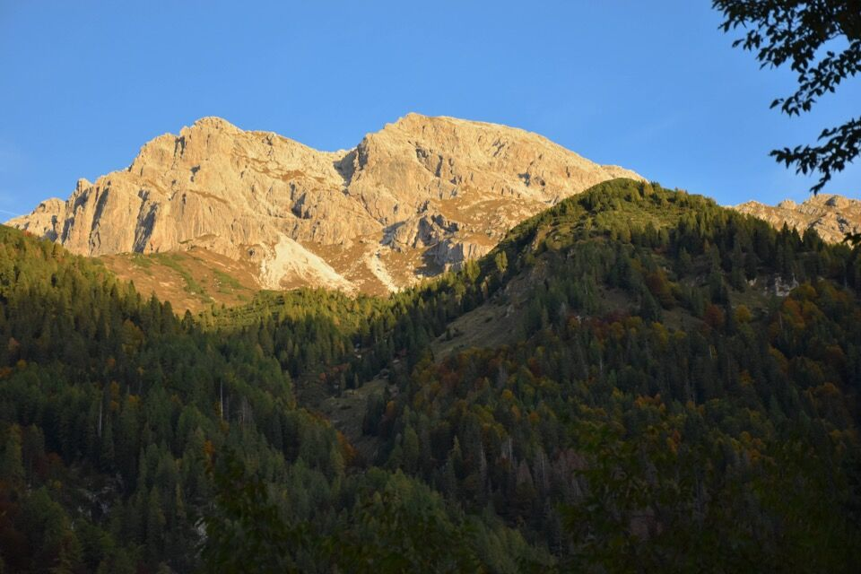
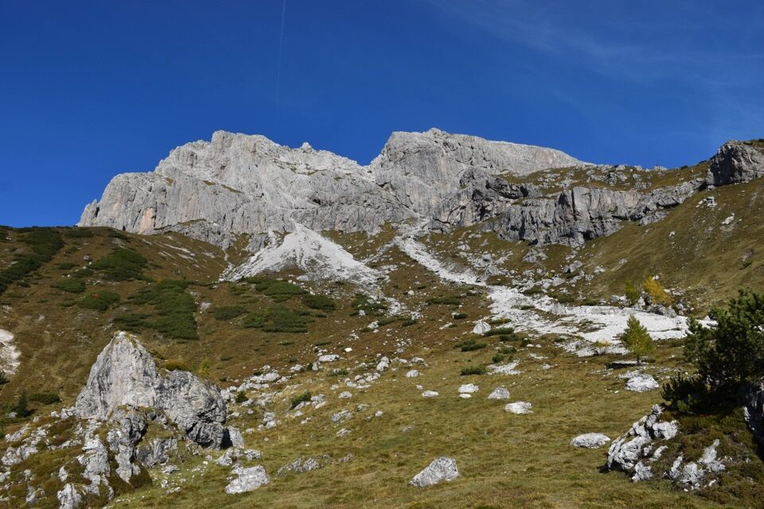
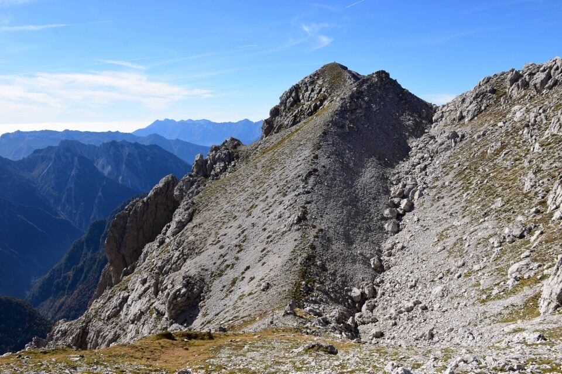
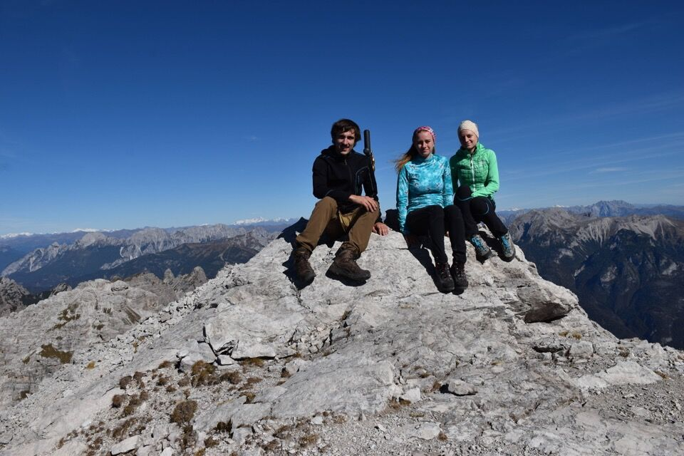
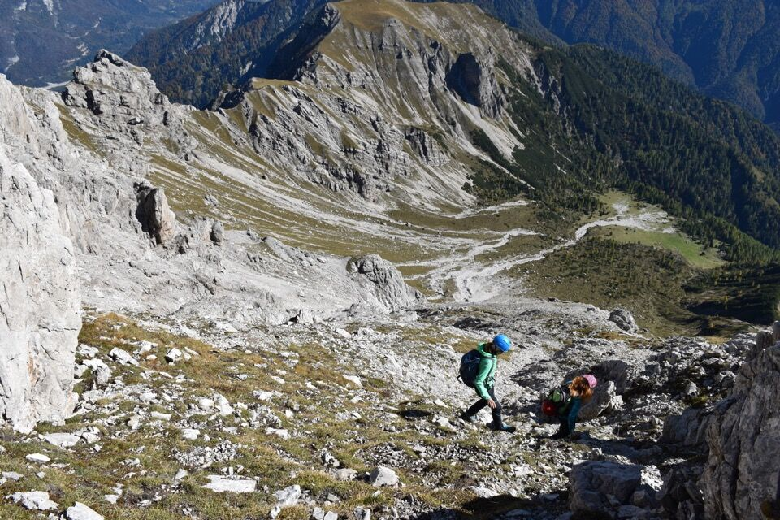
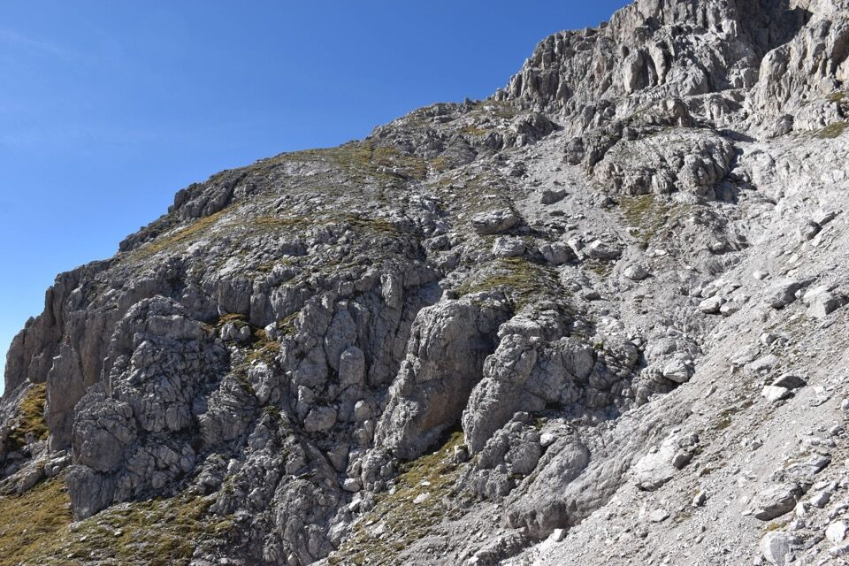
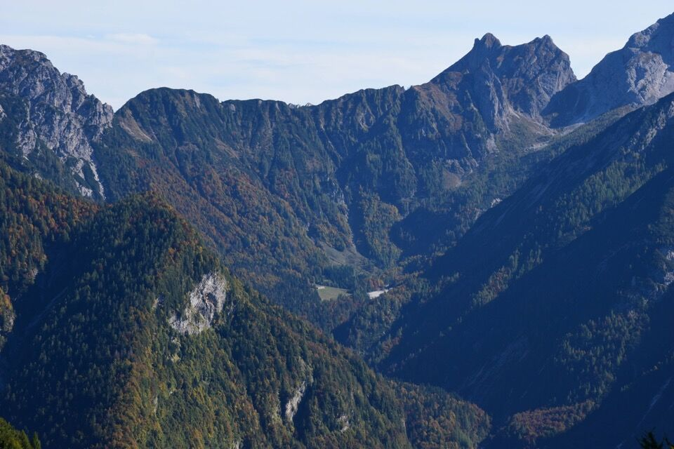

Alternative del tutto facili alla via normale: perché doversi uniformare alla massa anche in montagna?
Sto scrivendo quasi due anni dopo l'escursione: questa, per quanto facile, è una delle più belle giornate di croda che ricordo.
Partiamo alle prime luci dell'alba in direzione di casera Pramaggiore; dopo poco siamo già in vista della mèta, con il canalone ben evidente.
La gita merita anche solo per le meraviglie del bosco d'autunno.
In nemmeno due ore siamo già a casera Pramaggiore; seguiamo brevemente il CAI 387 per portarci in val del Clap.
Risaliamo faticosamente la val del Clap fino al culmine della colata di ghiaia più a destra, punto di inizio del canalone sud (ometto sotto roccia alla base).
Il canalone è davvero facile, qualche passaggio di I° e uno di I°+.
Al termine della prima parte, si esce a sinistra per i verdi e si rientra subito dopo nel canalone, che si rimonta facilmente fino alla forcella alta. L'ultima parte è su sfasciumi.
La forcella alta di Pramaggiore e il Clap Grande.
Finalmente in cima dopo 4h20 dalla partenza. Quale giornata migliore per salire sul Pramaggiore!
Dalla cima verso il Chiarescons, Cengle e Vetta Fornezze in primo piano. In secondo piano il Frascola.
Snobbiamo la via normale e decidiamo di scendere per la rampa est, ben visibile da casera Pramaggiore. Tecnicamente ancor più semplice del canalone, ma la sconsiglio perché monotona e su terreno sempre detritico.
Ecco la rampa vista dalla base.
È ora di tornare a valle. In foto il pittoresco cadin di Senons.
